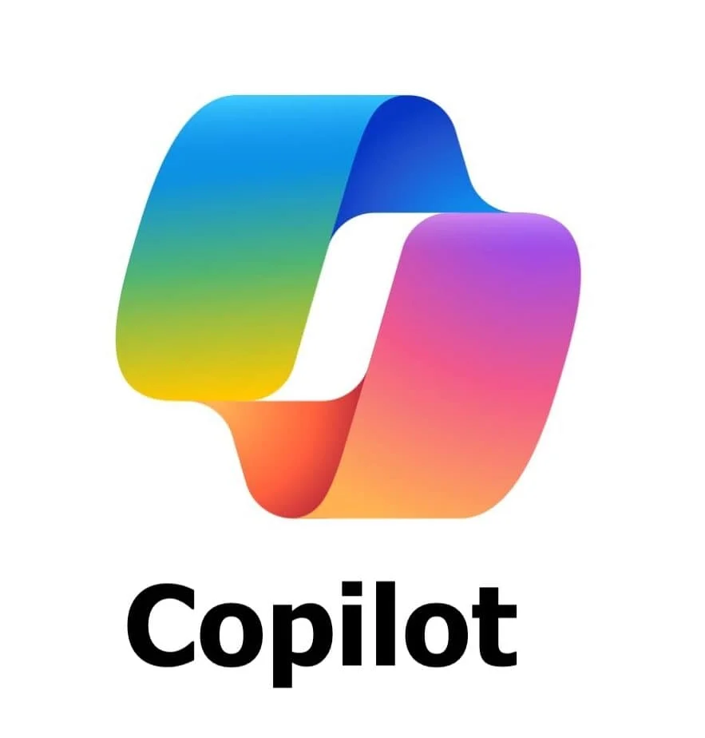
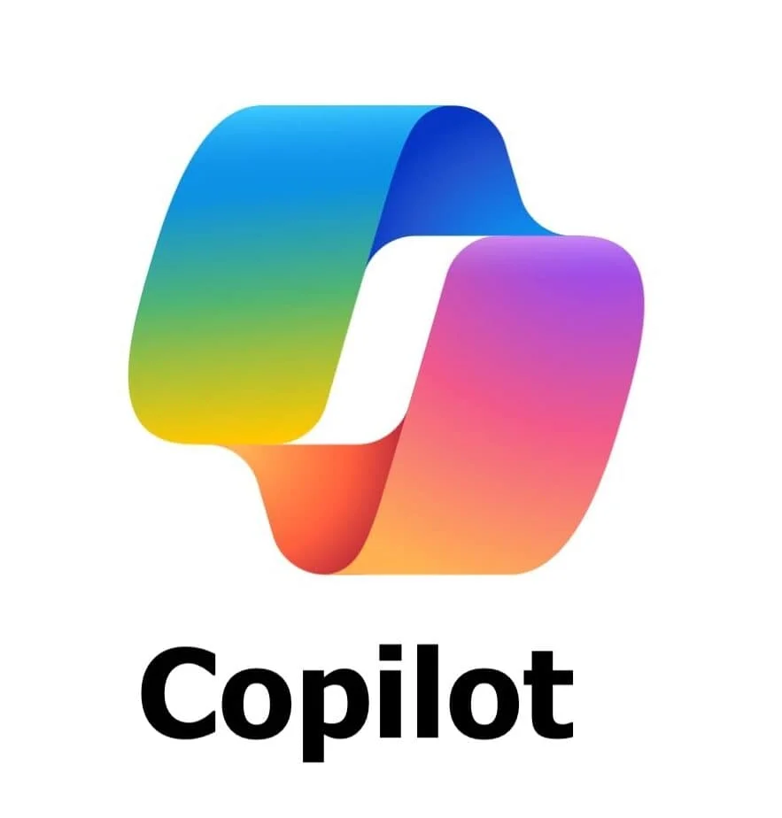

👨💻 Company & Job Role
🌿 Mandai Wildlife Group

Mandai Wildlife Group is Singapore’s premier organisation dedicated to wildlife conservation, education, and
sustainable tourism. As the steward of some of the world’s most renowned zoological parks — including the
Singapore Zoo, Bird Paradise, Night Safari,
Rainforest Wild Asia, and River Wonders — Mandai plays a vital role in
promoting biodiversity and ecological awareness across Southeast Asia and beyond.
With over 1.3 million guests annually and a legacy spanning more than 50 years, Mandai
continues to redefine wildlife experiences through immersive habitats, award-winning educational
programmes, and world-class animal care. The Group manages a living collection of over 900
animal species, many of which are endangered or critically threatened.
Mandai is also deeply committed to conservation impact. Through the Mandai Nature non-profit
arm, the organisation contributes to over 40 wildlife conservation projects across Southeast
Asia from hornbill nest protection to freshwater turtle recovery. It collaborates with global partners such as
the World Association of Zoos and Aquariums (WAZA), IUCN, Wildlife
Reserves Singapore Conservation Fund, and various academic institutions to drive research and
conservation outcomes.
Beyond the parks, Mandai’s Transformation Office is spearheading digital innovation through
automation, AI, and sustainable tech adoption — ensuring that operations remain future-ready and environmentally
conscious. Mandai’s culture combines professionalism with purpose, blending conservation science with
human-centred design to deliver solutions that truly make a difference.
Innovation and Technology Management Associate Trainee
Apr 2025 – Apr 2026
On-site @ Mandai, North Region, Singapore
🏢 Transformation Office
At Mandai’s Transformation Office, we are the catalysts for change—melding digital innovation with process excellence. Our mission? To modernise operations through strategic digital transformation and business process optimisation.
- Digital Transformation: Implemented AI-powered workflows, low-code solutions, and automation pipelines.
- Business Process Optimisation: Applied Lean principles and tools to streamline procurement, HR, and Park Operations using data-driven analysis and RPA.
- Cross-Functional Collaboration: Partnered with Park Ops, Vet, Procurement, HR to ideate and prototype impactful solutions.
- Outcome-Focused: Our goal: More efficient, transparent, error-free operations that scale with Mandai’s ambitious vision and promote a cultural change.
🛠 Role Summary
 


As an Innovation and Technology Management Associate Trainee with the Transformation Office, I came up with digital solutions that enhanced productivity and streamlined internal workflows across departments. My work involved building intelligent automations using the Microsoft Power Platform (Power Automate, Power Apps, AI Builder), exploring Generative AI for real-time insights, visualising data in Excel, and mapping operational processes using Miro for cross-functional collaboration.
📌 Key Responsibilities
- 📌 Liaised with multiple departments (HR, Procurement, Vet, Ops) to gather business requirements and propose automation opportunities
- 🔍 Conducted exploratory research on AI tools and evaluated digital tools for enhancing internal workflows and reporting accuracy
- 🧩 Designed logic flowcharts, wireframes, and storyboards using Miro and Notion to visualise and communicate project concepts
- ⚙️ Built, tested, and iteratively improved prototypes based on stakeholder feedback to ensure functionality aligned with operational needs
- 🧪 Evaluated Generative AI outputs for accuracy, hallucinations, and ethical bias across various platforms and tools
- 🎯 Delivered all assigned tasks under minimal supervision and proactively contributed new ideas to improve efficiency
📁 Projects Assigned
Used Power Automate and file system logic to automate the retrieval, classification, and renaming of procurement files from Mandai’s e-procurement portal. This eliminated repetitive file tracking tasks and gave staff more time to focus on higher value-added work, significantly improving operational efficiency in the Procurement Department.
Used 10 GenAI platforms to generate tourism itineraries and tracked how often Mandai appears. Cleaned results and visualised them with Excel dashboards and pivot tables to present AI-brand visibility metrics.
Led planning, filming, and editing for a 100-second townhall feature video. Interviewed 3 departments using a GoPro camera, mic systems, and edited using Filmora. Showcased to the entire organisation.
Shadowed zookeepers and Park Ops to map their daily workflow in Miro. Identified pain points in feeding route efficiency and suggested changes to improve the zookeepers’ productivity and animal comfort.